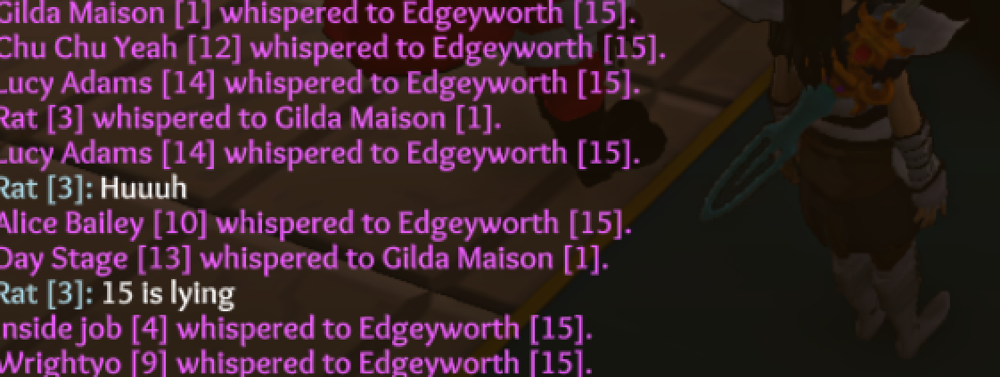
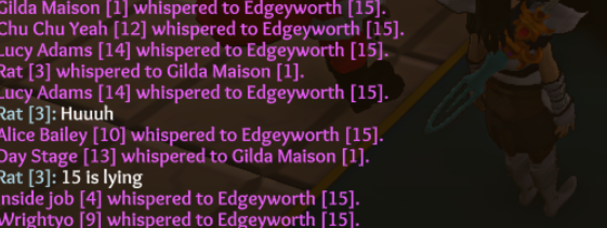

I know that King was made more statistically Evil than before, in hopes of countering the Whisper King meta.
Doesn’t help when this happens:

Now it’s the Day 1 Claim Prince and Whisper Prince Meta

I know that King was made more statistically Evil than before, in hopes of countering the Whisper King meta.
Doesn’t help when this happens:

Now it’s the Day 1 Claim Prince and Whisper Prince Meta
Which is why we do
Do not claim to prince unless jailed now
We will win eventually
People don’t know who the prince is by default though. So it’s arguably 10x better than king whisper meta.
I guess that’s true
In regards to specifically the % chance of starting king -
Starting Neut king isn’t fun to play with the nightshade wine changes, so it being removed is good.
And the 65% chance of Good King vs 35% Evil King is a nice balance, because if you’re acting scummy you might not get immediately hung because people are afraid of hanging a jester.
(Nerdy voice) Um actually sir it is fool


I guess there really isn’t a difference, and alright
Neutral king being gone is greaX no more fearing reaper
I had a great evil king game today tho.
Butler thought I was evil the entire time but everyone else thought I was good, us Unseen won.
Dealing with the whisper prince meta is way easier than the whisper King meta.
Oh wow
Look at that
People are whispering the Prince now
Who would’ve guessed?
I wonder how long that’s going to work until people figure out how to counter it as NK.
If we rely on NK to be the only counter, killing the NK means it’s effectively game over if the Prince isn’t dead yet.
That’s not what we want.
You have to go for the whispers. You have to make more classes less confirmable. There has to be more counterplay than the NK, or else it all falls apart once they die.
“I’m the prince! Whisper me claims or die, noobs!”
Reaper: 
It does stop the Prince from claiming D1 if he always dies N3 as a result. Sure you MIGHT stop the NK but usually it takes longer than that.
Plus in the time you took to kill the NK the Unseen might have gotten a sage or something.
Possessor is even better. He gets everyone’s claims first.
Even if the whisper meta still exists, the current king percentages are better than the old ones.
Tbh the whisper Prince meta was inevitable. I’ve seen the same thing happen in ToS, and because it’s basically a Mayor, there’s nothing you can really do without altering Prince.